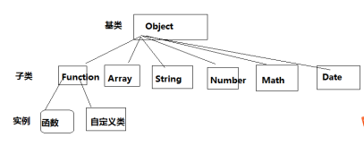
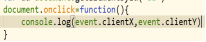
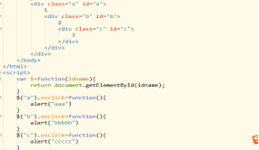
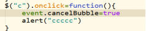

面向对象
1.单列模式
2.工厂模式
3.构造函数
(1) 类Js天生自带的类Object
基类Function Array Number Math Boolean Date Regexp String

1.事件
浏览器客户端上客户触发的行为都称为事件
所有的事件都是天生自带的，不需要我们去绑定，只需要我们去触发。
通过obj.事件名=function(){}
事件名:onmouseover onmouseout onmousedown onmousemove onmouseup
Onclick onchange onfocus onblur 等等
当用户触发一个事件时，浏览器的所有详细信息都存在一个叫event的对象上。
我们把他叫事件对象
所有事件在绑定方法的时候，天生自带一个参数就叫event。
鼠标的坐标
event.clientX
event.ClientY

Event 的兼容性
在chrome下 event是undefined 在Ie低版本下是null，火狐下会报错
document.onclick=function(e){
var e=e||window.event
}
2.事件冒泡
什么叫事件冒泡
当给父子元素的同一事件绑定方法时，触发了子元素身上的事件，执行完毕之后，
也会触发父级元素的相同事件，这种传播机制叫事件冒泡。

取消事件冒泡
Event对象有个属性叫cancelBubble默认值是false 改成true就取消当前事件冒泡

3.事件捕获
给一个元素绑定事件，普通写法是
obj.onclick=function(){} 这就相当于给obj的onclick属性赋值是一个道理。
obj.onclick=function(){}
这种写法有一点不好，后者会将前者覆盖掉。
事件绑定的第二种写法
标准浏览器用 addEventListener()这个方法
Ie低版本用attachEvent()这个方法
addEventListener(参数1，参数2，参数3)
参数1 是事件名 事件名不能带on
参数2 事件函数
参数3 布尔值，代表捕获不捕获 默认是false 不捕获但是冒泡。
事件捕获
事件捕获
给父子元素用addEventListener()绑定同一个事件时，当触发子元素身上的事件，会先触发父元
素，然后在传递给子元素，这种传播机制叫事件捕获。
attachEvent()和addEventListener()二者区别
attachEvent只有冒泡没有捕获addEventListener有冒泡也有捕获
4.Call()和apply()
Call和apply，就是改变函数里面的this指向的方法。
xxx.call()或xxx.apply()
特别强调下xxx必须是function，（普通函数，类，构造函数）
var obj={
name:"志伟"
}
function fn(){
console.log(this.name)
}
fn.call(obj)
Call()中第一个参数是null的时候，函数里的this还是指向原来的，不变。
所有事件都是异步的。